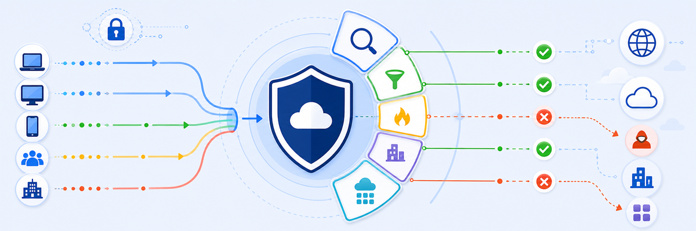

Lab 3: Configure ZIA Policy
LAB 3
Scenario: Configure a comprehensive set of ZIA policies for Safemarch's initial deployment — SSL inspection, URL filtering, file type controls, Office 365 tenant isolation, and firewall rules. Rule order matters throughout: the first matching rule wins, so department-specific exceptions must always sit above the broader catch-all rules.

THINK FIRST · ZIA POLICY DESIGN
A single misconfigured rule order can bypass your entire security posture — always think about rule precedence before placement.
- Why must the SSL inspection rule for MS Login Services be placed HIGHER in order than the "Office 365 One Click" rule?
- What is the difference between a "Caution" action and a "Block" action for executable file downloads — and when would you use Caution for IT Security but Block for everyone else?
- What breaks if you forget to create the custom URL category for Safemarch-specific blocked URLs before referencing it in the URL filtering policy?
Configuration Requirements
Work through all 15 requirements in the ZIA Admin Portal. Rule order is critical — where noted, a rule must sit above another.
SSL Inspection · Policy → SSL Inspection
File Type Controls · Policy → Advanced Policy Settings
URL Filtering · Policy → URL Filtering
O365 Tenant Restriction · Policy → Cloud App Control → Microsoft
Firewall · Policy → Firewall
Testing Requirements
- In ZIA Admin Portal → Analytics → Web Insights, check SSL inspection is active on HTTPS traffic.
- Browse to a legal liability URL (e.g.
www.freeslots-machines.com) — confirm blocked. - Log in as a non-Marketing user and confirm social networking is blocked; log in as Marketing and confirm LinkedIn is accessible.
- Navigate to
office.comand check web logs — confirm no entries appear (O365 One Click bypass working). - Check Firewall logs and confirm SSH traffic from an IT Security user hits the allow rule.
Where to get help
My Questions
My Notes
MENTAL NOTE
Five ZIA policy areas: SSL inspection (catch-all + exemptions + MS Login above O365 One Click), file type controls (Caution executables for IT Security, Block all + Block Undetectable, Finance upload restriction), URL filtering (legal liability block, eicar.org IT Security exception, social networking Marketing/LinkedIn exception, O365 One Click, advanced settings), O365 tenant restriction via Tenant Profile, and firewall SSH allow for IT Security only. Rule order is the most common failure point — department exceptions always go above catch-all rules.